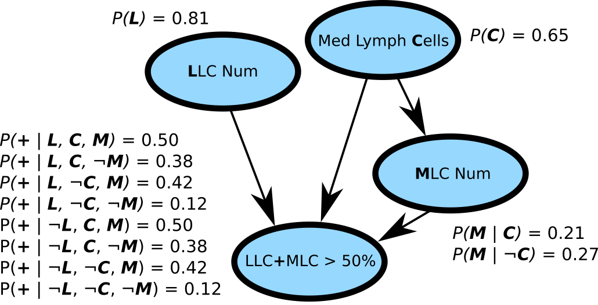
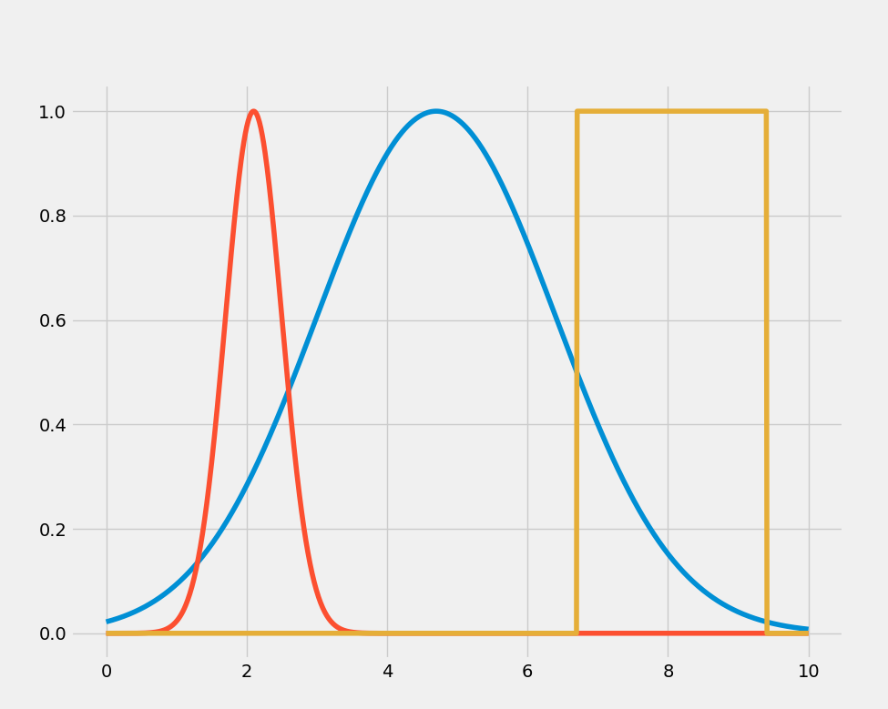
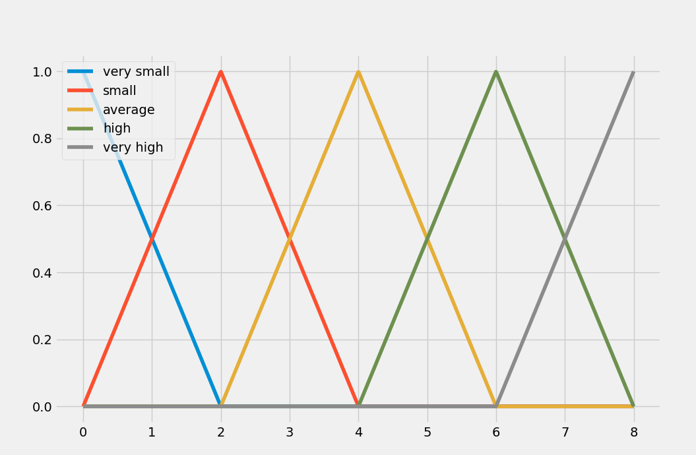

Automatic Revision of Ecological Theories using Fuzzy Logic
Motivation
Synthesis and automatic revision of ecological theories
Read Scientific Theories and Artificial Intelligence (2017).
Case 0: Deterministic theories
\[\frac{dx}{dt} = \alpha x - \beta xy \land \frac{dy}{dt} = \delta xy - \gamma y.\]Case 1: Learning conditions for deterministic theories
\[\forall x, l, t: SmallP(x, l, t) \mbox{ and } Resources(x, l, t) \Rightarrow P(x, l, t + 1) = G(x) \times P(x, l, t).\]Case 2: Probabilistic theories
\[\forall x, y: PPreyOn(x, y) = \alpha \times \exp\left[-\left(\frac{N(y) - D(x)}{R(x)/2}\right)^2\right]\]Key desired features
- Handling deterministic and probabilistic theories
- Fast algorithms for theory revision
- Handling arbitrarily large knowledge base
- ...with multi-objective theory revision
Reasoning systems
Reasoning systems in three dimensions
[Mathematical/Logic] Relations: \(e = mc^2\), \(\forall x: x \in \mathbb{N} \Rightarrow \exists y: y = x + 1\)...
Ambiguity: Is a virus alive? Is a theory effective? Does X equals Y?...
Uncertainty: Will a clown be elected president?
Predicate logic (or type theory)
Successors:
\[\forall x: Natural(x) \Rightarrow \exists y: y = x + 1.\]Probability axioms:
\[\forall s \subset S: P(s) \geq 0.\] \[P(S) = 1.\] \[A \cap B = \emptyset \Rightarrow P(A \cup B) = P(A) + P(B).\]Scientific theories:
\[e = mc^2.\] \[\frac{dx}{dt} = \alpha x - \beta xy \land \frac{dy}{dt} = \delta xy - \gamma y.\]e.g.: Learning-assisted theorem proving with millions of lemmas, 2014.
Predicate logic (or type theory)
Strengths
Clarity.
Can represent all mathematical scientific theories.
Why it sucks
Rigid. Cannot handle uncertainty.
Probabilistic approach
Probabilistic approach
Strengths
Conditional queries: \(P(M | L), ...\)
Arguably optimal or near-optimal to handle uncertainty (per de Finetti).
Why it sucks
Inference is difficult to scale (requires approximation with few guarantees).
Theory learning and revision is almost impossible even for small models.
Conditional queries for scientific knowledge base are interesting but not necessary.
Cannot represent mathematical ideas in a relational manner (think \(e = mc^2\)).
Fuzzy logic (why you're here)
Strengths
Fast. More flexible than logic and probability theory (with higher-order fuzziness).
Weaknesses
Can get complicated (mathematically speaking), e.g. SAT.
No conditional probabilities between theories :( (but...).
Fuzzy sets
Crisp and fuzzy sets
"Normal" (or crisp, or type-0 fuzzy) set: \(S = \{6, 7, 9, 42\}\).
We can say \(6 \in S, 9 \in S, 10 \not \in S\).
Type-1 fuzzy set: \(F = \{6 / 1, 7 / 0.5, 9 / 0.8, 42 / 0.8\}\).
We can say \(\mu_F(6) = 1, \mu_F(1) = 0, \mu_F(9) = 0.8\).
Fuzzy sets as functions
Love the triangles!
Fuzzy mathematics
- Fuzzy topological spaces, 1985.
- Fuzzy plane geometry I: Points and lines, 1997.
- Fuzzy graphs and fuzzy hypergraphs, 2000.
- Shortest paths in fuzzy weighted graphs, 2004.
- A historical overview of fuzzy mathematics, 2005.
- On fuzzy type theory, 2005.
Fuzzy graphs, in "Handbook of Graph Theory, 2nd edition", 2013.
Fuzzy logic
Truth table for crisp logic
| Connective | Informal name | Symbol | 1 x 1 | 1 x 0 | 0 x 1 | 0 x 0 |
|---|---|---|---|---|---|---|
| Conjunction | and | \(\land\) | 1 | 0 | 0 | 0 |
| Disjunction | or | \(\lor\) | 1 | 1 | 1 | 0 |
| Implication | implies | \(\Rightarrow\) | 1 | 0 | 1 | 1 |
| Equivalence | iff | \(\leftrightarrow\) | 1 | 0 | 0 | 1 |
| Exclusive disjunction | xor | \(\veebar\) | 0 | 1 | 1 | 0 |
You only need conjunction and negation
\[x \land y.\] \[x \lor y = \neg(\neg x \land \neg y).\] \[x \Rightarrow y = \neg x \lor y = \neg (x \land \neg y).\] \[x \leftrightarrow y = (x \Rightarrow y) \land (y \Rightarrow x) = \neg (x \land \neg y) \land \neg (y \land \neg x).\] \[x \veebar y = \neg (x \leftrightarrow y) = \neg (\neg (x \land \neg y) \land \neg (y \land \neg x)).\]One interpretation of fuzzy connectives
\[\neg x = 1 - x.\] \[x \land y = min(x, y).\] \[x \lor y = max(x, y).\]Gödel-Dummett T-norm (and S-norm et al.)
| Conjunction (T-norm) | \(x \land y = min(x, y)\) |
| Disjunction (S-norm) | \(x \lor y = max(x, y)\) |
| Implication | \(x \Rightarrow y = max(1 - x, y)\) |
| Equivalence | \(x \leftrightarrow y = min(max(1 - x, y), max(1 - y, x))\) |
| Exclusive disjunction | \(x \veebar y = max(min(1 - x, y), min(1 - y, x))\) |

Product T-norm (and S-norm et al.)
| Conjunction (T-norm) | \(x \land y = xy\) |
| Disjunction (S-norm) | \(x \lor y = x + y - xy\) |
| Implication | \(x \Rightarrow y = 1 - x + xy\) |
| Equivalence | \(x \leftrightarrow y = (1 - x + xy)(1 - y + xy)\) |
| Exclusive disjunction | \(x \veebar y = 1 - (1 - x + xy)(1 - y + xy)\) |


Łukasiewicz T-norm (and S-norm et al.)
| Conjunction (T-norm) | \(x \land y = max(0, x + y - 1)\) |
| Disjunction (S-norm) | \(x \lor y = min(1, x + y)\) |
| Implication | \(x \Rightarrow y = min(1, 1 - x + y)\) |
| Equivalence | \(x \leftrightarrow y = 1 - |x - y|\) |
| Exclusive disjunction | \(x \veebar y = |x - y|\) |


Fuzzy knowledge base
Structure
\[\mathbf{If} \mbox{ } antecedants \mbox{ } \mathbf{then} \mbox { } consequents.\] \[\mathbf{If} \mbox{ } antecedants \mbox{ } \mathbf{then} \mbox { } consequents.\] \[\mathbf{If} \mbox{ } antecedants \mbox{ } \mathbf{then} \mbox { } consequents.\] \[...\]\[\mathbf{If} \mbox{ } A_0 \land A_1 \land A_2 \land ... \mbox{ } \mathbf{then} \mbox { } C_0.\]
Initial model
- If KNN is high then interaction.
- If KNN is low then no interaction.
Back to the triangles!
- If Plant nectar tube depth is average then interaction.
- If Pollinator body size is small then interaction.
- If KNN is high then interaction.
- If Pollinator is specialist and Plant nectar tube dim is small then interaction.
- If Plant flower width is average then interaction.
- If Plant flower width is small and Pollinator tongue length is small then interaction.
- If KNN is low then no interaction.
Evaluation
With KNN: 0.3, Pollinator generalist: 0.4, Plant nectar tube depth: 0.1, Pollinator body size: 0.1, Plant nectar tube dim: 0.05, Plant flower width: 0.1, Pollinator tongue length: 0.7?
- If Plant nectar tube depth is average then interaction.
- If Pollinator body size is small then interaction.
- If KNN is high then interaction.
- If Pollinator is specialist and Plant nectar tube dim is small then interaction.
- If Plant flower width is average then interaction.
- If Plant flower width is small and Pollinator tongue length is small then interaction.
- If KNN is low then no interaction.
Evaluation
With KNN: 0.3, Pollinator generalist: 0.4, Plant nectar tube depth: 0.1, Pollinator body size: 0.1, Plant nectar tube dim: 0.05, Plant flower width: 0.1, Pollinator tongue length: 0.7?
- If \(0.2\) then interaction.
- If \(0.8\) then interaction.
- If \(0.3\) then interaction.
- If \(0.6\) and \(0.9\) then interaction.
- If \(0.2\) then interaction.
- If \(0.8\) and \(0.0\) then interaction.
- If \(0.7\) then no interaction.
Evaluation with Godel T-norm
With KNN: 0.3, Pollinator generalist: 0.4, Plant nectar tube depth: 0.1, Pollinator body size: 0.1, Plant nectar tube dim: 0.05, Plant flower width: 0.1, Pollinator tongue length: 0.7?
- If \(0.2\) then interaction.
- If \(0.8\) then interaction.
- If \(0.3\) then interaction.
- If \(min(0.6, 0.9)\) then interaction.
- If \(0.2\) then interaction.
- If \(min(0.8, 0.0)\) then interaction.
- If \(0.7\) then no interaction.
Activations
Interaction: \(0.2 \lor 0.8 \lor 0.3 \lor 0.6 \lor 0.2 \lor 0.0 = max(0.2, 0.8, ...) = 0.8\).
No interaction: \(0.7\).
Evaluation with product T-norm
With KNN: 0.3, Pollinator generalist: 0.4, Plant nectar tube depth: 0.1, Pollinator body size: 0.1, Plant nectar tube dim: 0.05, Plant flower width: 0.1, Pollinator tongue length: 0.7?
- If \(0.2\) then interaction.
- If \(0.8\) then interaction.
- If \(0.3\) then interaction.
- If \(0.6 \times 0.9\) then interaction.
- If \(0.2\) then interaction.
- If \(0.8 \times 0.0\) then interaction.
- If \(0.7\) then no interaction.
Activations
Interaction: \(0.2 \lor 0.8 \lor 0.3 \lor 0.54 \lor 0.2 \lor 0.0 = (0.2 + 0.8 - 0.2\times0.8) \lor ... = 0.96\).
No interaction: \(0.7\).
Epilogue on evaluation
Defuzzification is the process of getting values for the consequents based on the antecedants. It can be used for both classification and regression.
How good is the model?
It's awesome
Current approach for learning (Python script)
Evolution
- Start with the initial knowledge base with the two KNN rules.
- Randomly generate a rule, add it to the knowledge base.
- If the new knowledge base beats the old by 0.004 accuracy, keep the rule.
- Repeat \(\phi\) times
Pseudo-ensemble approach
- Make \(n\) evolutions.
- Count the frequency of the rules in the evolutions
- Try to add the rule one by one from most frequent to least
- Keep if accuracy improve by at least 0.004.
Behold!
| Model | Accuracy (10% testing data) |
|---|---|
| Fuzzy (initial model with two KNN rules) | 0.8105 |
| Fuzzy (after evolution) | 0.9281 |
| Supervised learning (SVM, traits only) | 0.8013 |
| Supervised learning (SVM, with KNN) | 0.7576 (WTF?) |
| Supervised learning (random forest, traits only) | 0.8074 |
| Supervised learning (random forest, with KNN) | 0.9113 |
Yes I know about the TSS (true skill statistic).
Next
Genetic (or evolutionary) algorithms

Multi-objective learning
NSGA-II and large fuzzy knowledge base
- If \(A_{0}, A_{4}, A_{8}\) then \(C_{0}\).
- If \(A_{4}, A_{10}\) then \(C_{4}\).
- If \(A_{9}, A_{11}, A_{12}\) then \(C_{8}\).
- If \(A_{1}, A_{5}\) then \(C_{0}\).
- If \(A_{9}, A_{11}, A_{18}, A_{22}\) then \(C_{2}\).
- If \(A_{0}\) then \(C_{0}\).
- If \(A_{3}, A_{20}, A_{28}\) then \(C_{5}\).
- ...
Given an input, select the rules which can be decided and return relevant predictions.
Type-2 fuzzy sets